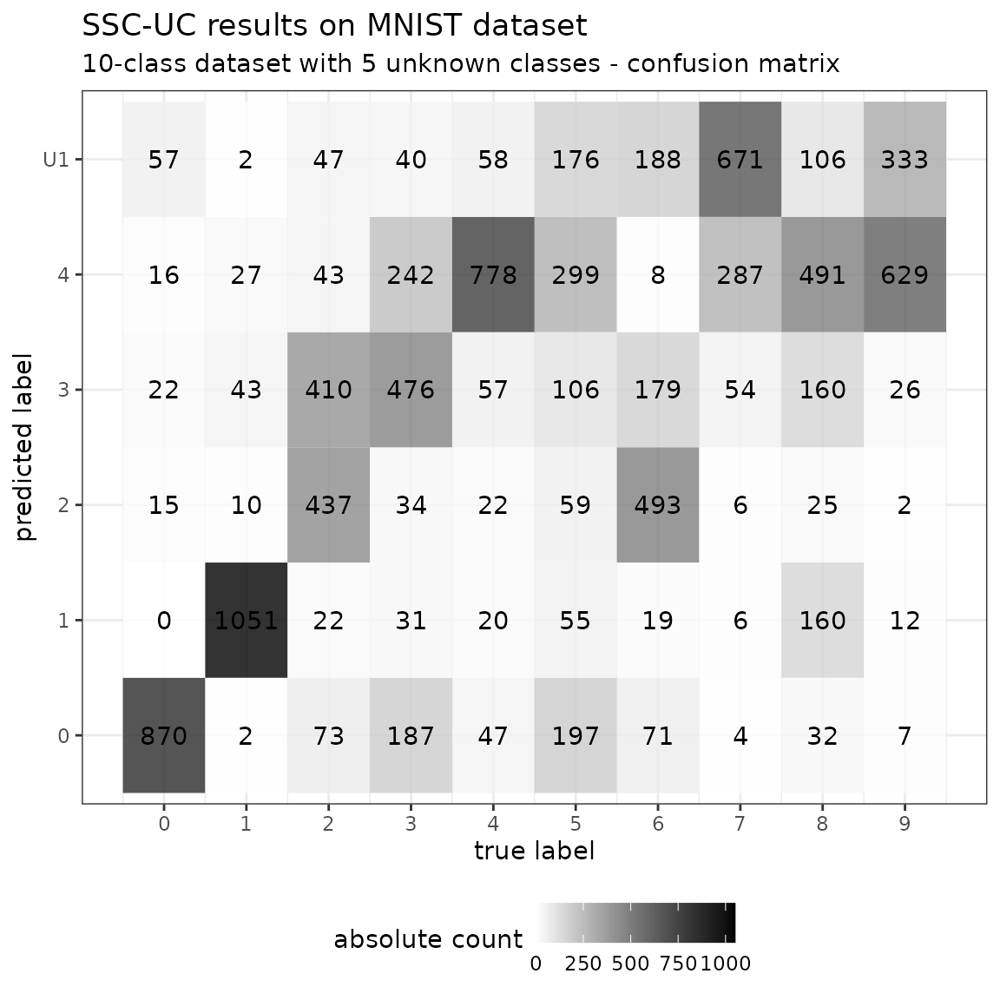

MNIST example
MNIST.RmdPrepare the MNIST dataset
library(dslabs)
set.seed(1)
# load dataset
mnist <- read_mnist()
# sample sizes
n_labeled <- 500
n_unlabeled <- 5000
# known vs. unknown classes
known_classes <- 0:4
all_classes <- sort(unique(mnist$train$labels))
labeled_train <- as.vector(sapply(known_classes,
function(x){
return(sample(which(mnist$train$labels == x),
n_labeled / length(known_classes)))
}))
unlabeled_train <- as.vector(sapply(all_classes,
function(x){
return(sample(setdiff(which(mnist$train$labels == x), labeled_train),
n_unlabeled / length(all_classes)))
}))
X <- mnist$train$images[union(labeled_train, unlabeled_train),]
y <- c(mnist$train$labels[labeled_train], rep(NA, length(unlabeled_train)))
ytrue <- mnist$train$labels[union(labeled_train, unlabeled_train)]
summary(as.factor(y))
#> 0 1 2 3 4 NA's
#> 100 100 100 100 100 5000
summary(as.factor(ytrue))
#> 0 1 2 3 4 5 6 7 8 9
#> 600 600 600 600 600 500 500 500 500 500
# input dataset for the model
data <- as.data.frame(cbind(X, y))
# model formula
formula <- y ~ . - 1Train SSC-UC model
The SSC-UC model is called via SSCUC and returns a BayesClassifier object with known and unknown classes. In this case, a Bayes classifier is used, specified by the argument naive=TRUE.
library(SSCUC)
# train model
model <- SSC(formula, data, naive = TRUE,
prior = "uniform")
#> Warning in meVVI(data = data, z = z, prior = prior, control = control, warn =
#> warn): mixing proportion fell below threshold
#> Warning in meVVI(data = data, z = z, prior = prior, control = control, warn =
#> warn): mixing proportion fell below threshold
#> Warning in meVVI(data = data, z = z, prior = prior, control = control, warn =
#> warn): mixing proportion fell below threshold
#> Warning in meVVI(data = data, z = z, prior = prior, control = control, warn =
#> warn): mixing proportion fell below threshold
#> Warning in meVVI(data = data, z = z, prior = prior, control = control, warn =
#> warn): mixing proportion fell below threshold
#> Warning in summary.mclustBIC(BIC, data, G = G, modelNames = modelNames): best
#> model occurs at the min or max of number of components considered!
#> Warning in Mclust(X[newclass_inds, !const_cols, drop = F], G = g_opts,
#> modelNames = gmmModelName, : optimal number of clusters occurs at min choice
#> [1] "Starting EM with 1 classes"
#> Warning in BayesClassifier(formula, data, naive = naive, prior = prior, :
#> BayesClassifier removed 4622 NAs
#> [1] "EM converged after 12 iterations"
#> [1] "BIC: 25677402.5309862"
summary(model)
#> BayesClassifier model with 6 classes and 667 non-constant features
#> Note: the total number of features is 784
#> ==============================
#> formula: y ~ . - 1
#> used features: V36, V37, V38, V39, V40, V41, V42, V43, V44, V45, V46, V47, V48, V49, V50, V51, V52, V63, V64, V65, V66, V67, V68, V69, V70, V71, V72, V73, V74, V75, V76, V77, V78, V79, V80, V81, V90, V91, V92, V93, V94, V95, V96, V97, V98, V99, V100, V101, V102, V103, V104, V105, V106, V107, V108, V109, V110, V114, V116, V117, V118, V119, V120, V121, V122, V123, V124, V125, V126, V127, V128, V129, V130, V131, V132, V133, V134, V135, V136, V137, V138, V139, V143, V144, V145, V146, V147, V148, V149, V150, V151, V152, V153, V154, V155, V156, V157, V158, V159, V160, V161, V162, V163, V164, V165, V166, V167, V168, V171, V172, V173, V174, V175, V176, V177, V178, V179, V180, V181, V182, V183, V184, V185, V186, V187, V188, V189, V190, V191, V192, V193, V194, V195, V196, V197, V198, V199, V200, V201, V202, V203, V204, V205, V206, V207, V208, V209, V210, V211, V212, V213, V214, V215, V216, V217, V218, V219, V220, V221, V222, V223, V224, V225, V226, V227, V228, V229, V230, V231, V232, V233, V234, V235, V236, V237, V238, V239, V240, V241, V242, V243, V244, V245, V246, V247, V248, V249, V250, V251, V252, V253, V254, V255, V256, V257, V258, V259, V260, V261, V262, V263, V264, V265, V266, V267, V268, V269, V270, V271, V272, V273, V274, V275, V276, V277, V278, V279, V280, V282, V283, V284, V285, V286, V287, V288, V289, V290, V291, V292, V293, V294, V295, V296, V297, V298, V299, V300, V301, V302, V303, V304, V305, V306, V307, V308, V310, V311, V312, V313, V314, V315, V316, V317, V318, V319, V320, V321, V322, V323, V324, V325, V326, V327, V328, V329, V330, V331, V332, V333, V334, V335, V338, V339, V340, V341, V342, V343, V344, V345, V346, V347, V348, V349, V350, V351, V352, V353, V354, V355, V356, V357, V358, V359, V360, V361, V362, V363, V366, V367, V368, V369, V370, V371, V372, V373, V374, V375, V376, V377, V378, V379, V380, V381, V382, V383, V384, V385, V386, V387, V388, V389, V390, V391, V394, V395, V396, V397, V398, V399, V400, V401, V402, V403, V404, V405, V406, V407, V408, V409, V410, V411, V412, V413, V414, V415, V416, V417, V418, V419, V421, V423, V424, V425, V426, V427, V428, V429, V430, V431, V432, V433, V434, V435, V436, V437, V438, V439, V440, V441, V442, V443, V444, V445, V446, V447, V448, V449, V450, V451, V452, V453, V454, V455, V456, V457, V458, V459, V460, V461, V462, V463, V464, V465, V466, V467, V468, V469, V470, V471, V472, V473, V474, V475, V476, V478, V479, V480, V481, V482, V483, V484, V485, V486, V487, V488, V489, V490, V491, V492, V493, V494, V495, V496, V497, V498, V499, V500, V501, V502, V503, V504, V507, V508, V509, V510, V511, V512, V513, V514, V515, V516, V517, V518, V519, V520, V521, V522, V523, V524, V525, V526, V527, V528, V529, V530, V531, V532, V534, V535, V536, V537, V538, V539, V540, V541, V542, V543, V544, V545, V546, V547, V548, V549, V550, V551, V552, V553, V554, V555, V556, V557, V558, V559, V562, V563, V564, V565, V566, V567, V568, V569, V570, V571, V572, V573, V574, V575, V576, V577, V578, V579, V580, V581, V582, V583, V584, V585, V586, V587, V590, V591, V592, V593, V594, V595, V596, V597, V598, V599, V600, V601, V602, V603, V604, V605, V606, V607, V608, V609, V610, V611, V612, V613, V614, V615, V618, V619, V620, V621, V622, V623, V624, V625, V626, V627, V628, V629, V630, V631, V632, V633, V634, V635, V636, V637, V638, V639, V640, V641, V642, V643, V647, V648, V649, V650, V651, V652, V653, V654, V655, V656, V657, V658, V659, V660, V661, V662, V663, V664, V665, V666, V667, V668, V669, V670, V676, V677, V678, V679, V680, V681, V682, V683, V684, V685, V686, V687, V688, V689, V690, V691, V692, V693, V694, V695, V696, V697, V704, V705, V706, V707, V708, V709, V710, V711, V712, V713, V714, V715, V716, V717, V718, V719, V720, V721, V722, V723, V724, V725, V733, V734, V735, V736, V737, V738, V739, V740, V741, V742, V743, V744, V745, V746, V747, V748, V749, V750, V751, V761, V762, V763, V764, V765, V766, V767, V768, V769, V770, V771, V772, V773, V774, V775, V776, V777, V778, V779
#> parameters:| mu | Sigma | prior | |
|---|---|---|---|
| 0 | 0,0,0,0,0,0,0,0,0,0,… | 0.01,0,0,0,0,0,0,0,0,0,… | 0.17 |
| 1 | 0,0,0,0,0,0,0,0,0,0,… | 0.01,0,0,0,0,0,0,0,0,0,… | 0.17 |
| 2 | 0,0.22,0.17,0.08,0,0,0.04,0.35,0.09,0,… | 0.02,0,0,0,0,0,0,0,0,0,… | 0.17 |
| 3 | 0,0,0,0,0,0,0,0,0,0,… | 0.01,0,0,0,0,0,0,0,0,0,… | 0.17 |
| 4 | 0,0,0,0,0,0,0,0,0,0,… | 0.01,0,0,0,0,0,0,0,0,0,… | 0.17 |
| U1 | 0,0,0.01,0.52,0.55,0.96,0.35,0.25,0.04,0.41,… | 0.01,0,0,0,0,0,0,0,0,0,… | 0.17 |
Predict and evaluate unlabeled data using SSC-UC model
# predict on test dataset
test <- as.data.frame(cbind(mnist$test$images,
y = mnist$test$labels))
pred <- predict(model, newdata = test, type = "class")Evaluate in full confusion matrix (multiple unknown classes)
library(caret)
#> Loading required package: ggplot2
#> Loading required package: lattice
library(knitr)
library(ggplot2)
# specify levels
levels <- sort(union(unique(pred), unique(test$y)))
# compute confusion matrix
cm <- confusionMatrix(
reference = factor(test$y, levels = levels),
data = factor(pred, levels = levels))
# print macro-averaged F1 score
cat("Macro-averaged F1 score: ", mean(cm$byClass[,"F1"], na.rm = TRUE))
#> Macro-averaged F1 score: 0.5469114